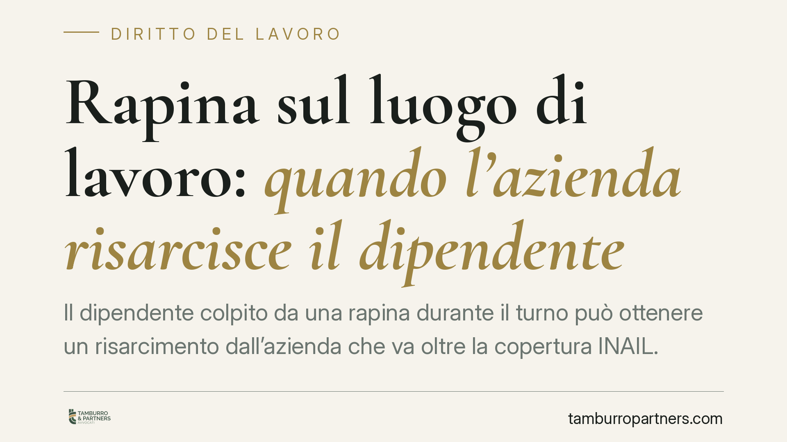

Rapina sul luogo di lavoro: quando l'azienda risarcisce il dipendente
Il dipendente colpito da una rapina durante il turno può ottenere un risarcimento dall'azienda che va oltre la copertura INAIL. La condizione è precisa: il datore deve aver trascurato le misure di sicurezza esigibili in quel contesto. Vediamo quando scatta la responsabilità e come muoversi in modo concreto.

Il caso e perché conta
Una rapina in banca, in una tabaccheria o in un esercizio commerciale non colpisce solo il patrimonio dell'azienda. Colpisce anche i lavoratori presenti, che possono riportare lesioni fisiche e, con frequenza altrettanto rilevante, conseguenze psicologiche durature.
La domanda ricorrente è netta: oltre all'intervento dell'INAIL, il dipendente può chiedere danni direttamente al datore di lavoro? La risposta è sì, ma solo a determinate condizioni. Non basta essere stati vittime dell'evento: occorre dimostrare una mancanza dell'azienda.
Inquadramento normativo
Il perno della questione è l'art. 2087 del codice civile. La norma impone all'imprenditore di adottare, nell'esercizio dell'impresa, tutte le misure che, secondo la particolarità del lavoro, l'esperienza e la tecnica, sono necessarie a tutelare l'integrità fisica e la personalità morale dei prestatori di lavoro.
È una clausola aperta. Non elenca misure specifiche, ma obbliga il datore a valutare i rischi concreti dell'attività e a prevenirli. Per attività a elevata esposizione a rapine — sportelli bancari, distributori, esercizi con contanti — il rischio è prevedibile e va gestito.
La Cassazione Civile ha chiarito che questa responsabilità non è oggettiva: il datore non risponde per il solo fatto che l'evento si sia verificato. Risponde se ha omesso cautele esigibili, tenuto conto delle circostanze. Non gli si chiede di impedire ogni rapina, ma di aver predisposto ciò che era ragionevole predisporre.
Cosa copre l'INAIL e cosa no
Occorre distinguere due piani.
L'INAIL interviene automaticamente per l'infortunio sul lavoro: la rapina subita durante il turno rientra in questa categoria. L'istituto indennizza il danno biologico secondo tabelle predeterminate e le conseguenze permanenti in base al grado di invalidità.
La copertura INAIL, però, non è integrale. Non ristora l'intero danno subito. Restano scoperte alcune voci — in particolare il cosiddetto danno differenziale (la parte di danno biologico che eccede l'indennizzo INAIL) e il danno morale, cioè la sofferenza soggettiva legata all'evento traumatico.
È proprio su queste voci che si concentra l'eventuale richiesta al datore di lavoro, quando ne ricorrano i presupposti di responsabilità.
Quando l'azienda risponde
Il dipendente che agisce deve provare tre elementi: il danno subito, l'inadempimento del datore all'obbligo di sicurezza e il nesso tra i due.
Sul piano pratico, la responsabilità è più probabile quando l'azienda ha ignorato misure standard per il settore: assenza di sistemi antirapina, mancata formazione del personale su come comportarsi, sportelli non protetti, turni con un solo addetto in contesti a rischio, precedenti rapine non seguite da alcun intervento correttivo.
Al contrario, se l'azienda dimostra di aver adottato le cautele ragionevoli e adeguate al rischio, la responsabilità tende a escludersi. L'evento resta, in quel caso, un fatto imprevedibile e inevitabile riconducibile a terzi.
Implicazioni pratiche per il lavoratore
Per il dipendente colpito, il punto decisivo non è l'accaduto in sé, ma la ricostruzione delle misure di sicurezza presenti o assenti. È lì che si gioca l'esito.
Anche il danno psichico — disturbo post-traumatico, ansia, impossibilità di rientrare in servizio — è pienamente risarcibile, purché documentato da accertamenti medico-legali. Non va sottovalutato: in molti casi è la conseguenza più incidente e duratura.
I tempi contano. La richiesta al datore soggiace a termini di prescrizione e la raccolta delle prove va avviata subito, quando i riscontri sono ancora reperibili.
Cosa fare in concreto
- Denuncia e certificazione: presenta subito denuncia dell'evento e fatti refertare da un medico, anche per le conseguenze psicologiche, non solo per quelle fisiche.
- Attiva l'INAIL: assicurati che l'infortunio sia comunicato e istruito correttamente; è la base indennitaria minima.
- Documenta le misure di sicurezza: raccogli ogni elemento sulle cautele adottate o mancanti (sistemi antirapina, formazione, presenza di più addetti, eventuali rapine precedenti).
- Conserva la documentazione sanitaria: referti, terapie, eventuali periodi di inabilità o assenza. Servono a quantificare il danno differenziale e morale.
- Valuta i termini: verifica la prescrizione applicabile alla richiesta risarcitoria prima che decorra.
Disclaimer
Contributo informativo a cura di Tamburro & Partners - Avv. Giuseppe Tamburro. Non costituisce parere legale.
Ogni storia di lavoro ha i suoi tempi.
Se gestisci HR e vuoi un confronto su contenzioso, ispezioni o licenziamenti, scrivi allo studio. Ti rispondiamo entro un giorno lavorativo.